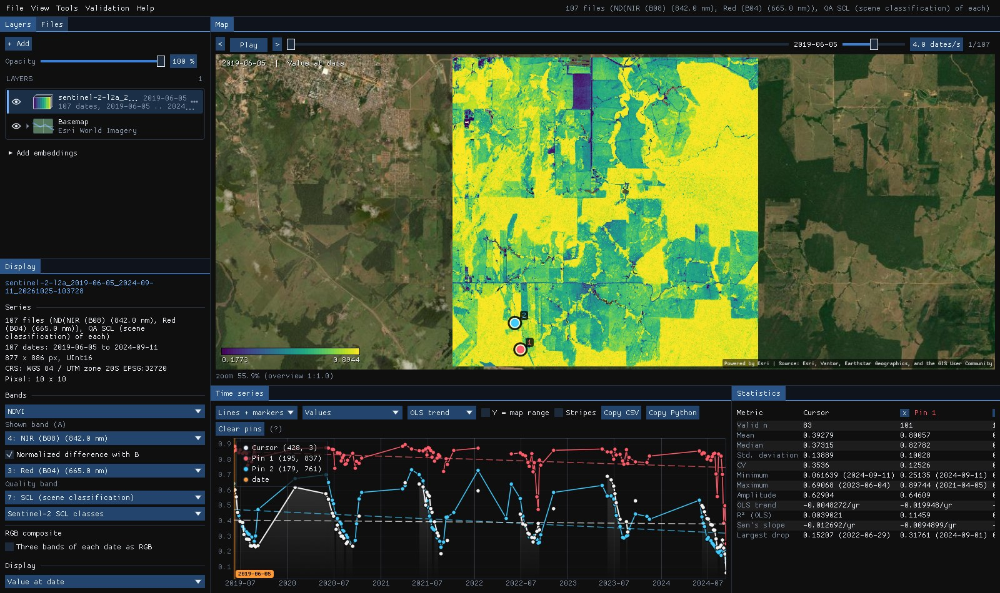
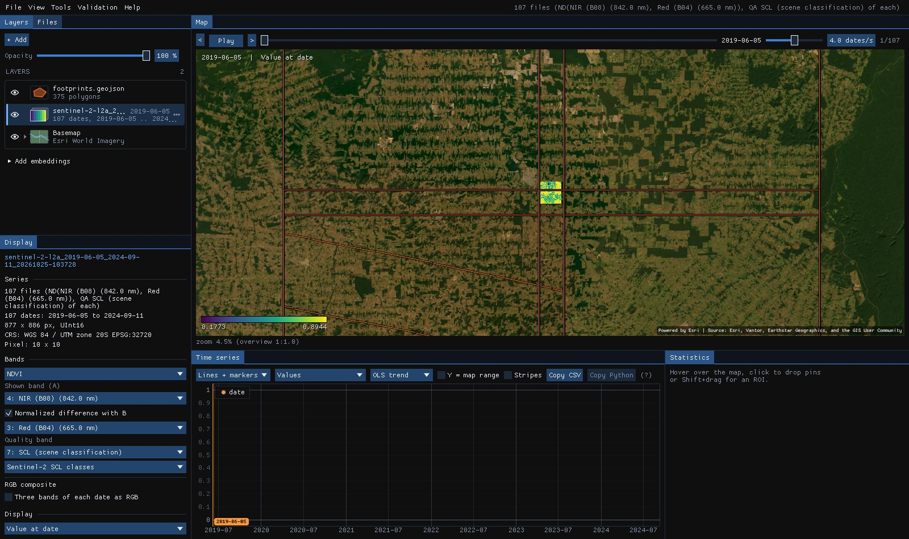

01The idea
A STAC catalog (SpatioTemporal Asset Catalog) describes each scene as a GeoJSON feature: its outline, its date, its cloud cover, and links to its files, one per band. Those files are cloud-optimized GeoTIFFs: tiled, with overviews, so a program can read just the part of a scene it needs. Janus asks the catalog for the scenes, groups them by day, and makes each day one image of the area on one grid. Nothing is downloaded until it is drawn, and then only the blocks and the overview level on screen.
- Collection
- A product of the catalog: Sentinel-2 L2A, Landsat Collection 2 Level-2, a data cube.
- Item (scene)
- One acquisition of one tile of a collection:
S2B_MSIL2A_20190610T142759_..._T20LNP. - Asset
- A file of an item: a band (
B04,red), the quality band, a thumbnail. Janus uses the single-band GeoTIFFs. - STAC API
- The catalog's search: a
POST /searchwith the collection, the area, the dates and a limit, answered page by page.
02The catalogs
File → Search STAC catalog... opens a window with three catalogs ready, each with the collections a series of reflectances needs, and any other STAC API by its URL:
| Catalog | Collections | Access |
|---|---|---|
| Earth Search (Element 84, AWS) | Sentinel-2 Collection 1 L2A, 10–60 m, every 5 days, 2015 on | public, no account |
| Planetary Computer (Microsoft) | Sentinel-2 L2A; Landsat Collection 2 Level-2 (Landsat 4 to 9, 30 m, 1982 on) | short-lived tokens (SAS) that Janus asks for and renews, no account |
| Brazil Data Cube (INPE) | 16-day cubes of Sentinel-2 (10 m), Landsat (30 m) and CBERS-4 WFI (64 m) on a regular grid | public, no account |
| Another STAC API | any, from List all (its /collections) | public files |
List all also lists the other collections of the three catalogs (Harmonized Landsat Sentinel, MODIS...). Janus finds their bands from the items: their names, their wavelengths (eo:bands), their scale, offset and nodata (raster:bands).
03Searching
The example: Planetary Computer's Sentinel-2 L2A over a square of central Rondônia, Brazil, 8.8 km a side (63.00° to 62.92° W, 10.00° to 9.92° S), from June 2019 to September 2024, scenes with 5% of clouds at most.
- Area
- Visible area (the map's extent), the ROI, or a Box in degrees (west, south, east, north). With no layer open, the box.
- From, to
- The dates, inclusive (YYYY-MM-DD). The last 365 days at first.
- Clouds at most
- The scenes' cloud cover (
eo:cloud_cover) as the catalog gives it: of the whole scene, not of the area. 100 keeps them all.
Search found 375 scenes on 107 dates. The square sits where four Sentinel-2 tiles meet, so a date has up to four scenes. Each date is listed with its scenes and their mean cloud cover, all ticked: untick the ones you do not want, or Clearest (< 10%) keeps the dates under 10%.
![The Search STAC catalog window over the Janus window: Planetary Computer, Sentinel-2 L2A, a box from 63.00 W 10.00 S to 62.92 W 9.92 S (8.8 x 8.8 km), from 2019-06-01 to 2024-09-30, 5% clouds at most; 375 scenes on 107 dates, the first ones 2019-06-05 with 4 scenes and 1% clouds, 2019-06-10 with 3 scenes and 0%. Behind it the series opened as NDVI over the Esri imagery: fields and pastures in blue and green, forest in yellow on the east, and the chart of the pixel under the cursor from 2019 to 2024.](assets/img/stac/01-search.jpg)
04Bands and cells
Under the dates, the collection's bands, in the order of their wavelengths. Blue, green, red, NIR, the two SWIR and the quality band come ticked: enough for every index Janus computes, the RGB composites and the cloud mask, and a third of what all the bands would weigh.
- Quality band
- Sentinel-2's scene classification (
SCL): classes 4, 5 and 6 (vegetation, bare soil, water) are kept, clouds, their shadows, cirrus and snow are masked. Landsat'sQA_PIXEL: its fill, cloud, dilated cloud, cloud shadow and snow bits. Janus picks it as the layer's quality band. - Cells
- Finest of the bands (10 m for Sentinel-2), or 20 to 250 m: coarser cells average the reflectances (the quality band takes the nearest code), for large areas. The window gives the size of the series: here 877 × 886 cells of 10 m, 107 dates × 7 bands.
Sentinel-2's offset
Since processing baseline 04.00 (January 2022), ESA's L2A reflectances carry an offset of −0.1: a value of 1000 is a reflectance of 0. Planetary Computer's items do not say so; Janus reads each scene's baseline and gives its bands the scale and offset that make every date comparable, so the NDVI does not jump in 2022.
05Open as a layer
Open as a layer runs as a task (Tools → Tasks): it writes one VRT per date under %LOCALAPPDATA%\Janus\results\stac, each a mosaic of that day's scenes pointing at the catalog's files, and opens the folder as a layer. With red and NIR among the bands the layer opens on the NDVI, with the quality band masking clouds, like any Landsat or Sentinel series on disk.


Pin 1 sits in a forest: its NDVI stays around 0.8 (mean 0.80 over 101 dates) and only falls, to 0.25, at the end of the 2024 dry season, its largest drop. Pin 2 is a pasture: green in the wet months, down to 0.25 every dry season. Six of pin 1's 107 dates are missing: the scene classification called that pixel cloud, shadow or cirrus on them, and the mask left them out, though the scenes had 5% of clouds at most.
The map's overview of the 107 dates was read in 98 s: every date opens its scenes over the network and reads one of their overview levels. It is then cached on disk like any series: opening the folder again, the overview took 0.1 s. A pixel's series reads every date from the catalog's files, a few round trips each, so Janus reads twelve dates at once: the two pins' 107 dates came in under a minute (one date at a time, they took nine). Zoomed in, the map reads the blocks on screen at full resolution, as for any cloud-optimized GeoTIFF.
Read in place: online
The layer reads the catalog's files as you zoom in and look at pixels, so it needs the connection while you work. Planetary Computer's files are read with tokens that expire within the hour: Janus renews them in the background, and asks for new ones when the folder is opened again another day. For offline work, download the series (section 07).
06One grid for every date
Scenes come in tiles, each in its own projection, and bands come at 10, 20 or 60 m. A series needs one grid. Janus makes it from the scenes found:
- Projection
- The one most scenes have: here UTM zone 20 S. The area's corners and edges are projected to it.
- Cells
- The finest band's, aligned on the scenes' own pixels, so a 10 m band is read without resampling.
- Mosaic
- A date's scenes are drawn clearest on top, each clipped to its pixels in the area. The quality band of a 20 m scene is taken at the nearest cell; reflectances at coarser cells are averaged.
- Another UTM zone
- A scene in another projection (where the area crosses a zone boundary, as along 60° W) is warped onto the grid by GDAL's warped VRT, still read in place.
Brazil Data Cube's cubes are already on a regular grid of their own (BDC's Albers), and give one image every 16 days: the best observation of each pixel. Their items have no projection metadata; Janus reads it from one file of each tile.
07Download as GeoTIFFs
Download as GeoTIFFs makes the same series and reads it once, writing one cloud-optimized GeoTIFF per date (DEFLATE, the bands of the date, their wavelengths, scales and nodata kept) into a folder under results\stac, then opens it. Its progress is in Tools → Tasks, where it can be cancelled; a date is written to a .part file first, so a folder never holds a half-written date.
The window gives the size before you start: here 877 × 886 cells, 107 dates × 7 bands, about 1.2 GB uncompressed, less on disk. For a larger area or a longer series, coarser Cells or fewer bands make it lighter; the Clearest dates alone too.
08Footprints
Footprints as a vector layer adds the scenes found as polygons, with their id, date, cloud cover and tile in the attribute table: where each tile lies, and which dates cover only part of the area.


The strips are the tiles' overlaps (Sentinel-2's 110 km tiles overlap by 10 km): the square sits inside four of them, which is why a date has up to four scenes, the same pixels in several. Where an orbit's swath ends, a scene covers part of its tile only (the diagonal): on such dates the mosaic takes the rest from the other scenes of the day, or leaves it empty.
09What next
- Detect change on it: a series of every date suits CCDC, S-CCD and EWMACD; a regular one (Brazil Data Cube's 16 days) BFAST and BEAST.
- Classify it: the Deep learning guide trains TempCNN or L-TAE on samples over the series.
- Its embeddings: AlphaEarth or TESSERA of the same area, from the Layers panel (Embeddings guide).
- Script it: the VRTs open in GDAL, QGIS or Python (
rasterio.open) like the files they point at; Planetary Computer's need a signed URL there (planetary_computer.sign).
10References
- STAC: the SpatioTemporal Asset Catalog specification and its API, stacspec.org.
- Earth Search by Element 84, element84.com/earth-search; Sentinel-2 Collection 1 L2A, Copernicus Sentinel data (ESA).
- Microsoft Planetary Computer, planetarycomputer.microsoft.com.
- Ferreira, K. R., et al. (2020). Earth observation data cubes for Brazil: Requirements, methodology and products. Remote Sensing, 12(24), 4033.
- ESA (2022). Sentinel-2: new processing baseline 04.00 and the radiometric offset of the L1C and L2A products.
- U.S. Geological Survey. Landsat Collection 2 Level-2 Science Products.